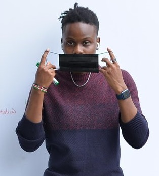

MY TECH HEROS!
Tech
..
They are Nigerian Techies and have made visible impacts in the tech space.They are a
major source of
strenght and inspiration to us. the fact they are young and getting it, is what what gives us the
agility,eagerness and confidence to walk into the tech path.
- Humphrey Jerry and Andrew Ukoba
